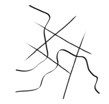

Khaing Zin Zin Thant
To Be Untitled
Video, wood, Itong, found objects, resin, paper prints, epoxy resin, found home-appliances, found objects
Food, universal language of culture, home, family. What do you get when you break the concept of food down to its most basal form, metaphysically and culturally?
This installation seeks to explore the immigration of humans and culture across borders. Set within a fractured kitchen-like space, the installation presents a tension between belonging and estrangement, attachment and detachment within human migration experiences metaphorically represented by deconstructing food ingredients. The installation also serves as a personal ritual of ruminating cultural memories and identities assembled from fragments of time and being.
instagram:@k_zz_t_art
𖹭𖹭 back 𖹭𖹭